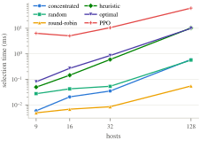

If the system is going to add and remove hosts while running, the method that picks
backups has to be fast. A method that picks perfectly but takes seconds to decide is
much less useful than one that is nearly as good and answers straight away. This page
asks a different question from the others: not "how good is the mapping" but "how long
does it take to work it out."
30 repeats per method and size, first call skipped as warm-up
Time to work out one full mapping
Method
9 hosts (ms)
16 hosts (ms)
32 hosts (ms)
128 hosts (ms)
concentrated
0.005
0.013
0.055
0.731
random
0.021
0.029
0.084
0.639
round_robin
0.004
0.005
0.015
0.030
heuristic
0.055
0.161
0.646
7.260
optimal (Hungarian)
0.097
0.208
0.913
8.943
rl (PPO inference)
1.81
3.76
11.29
49.64
Time at 128 hosts (ms) — log scale, the size where the methods differ most
concentrated
0.731
random
0.639
round_robin
0.030
heuristic
7.260
optimal
8.943
rl
49.64

Selection overhead per full mapping computation, log–log axes. Even the slowest
method (rl, 49.6 ms at 128 hosts) stays well below
realistic failure-detection intervals. (Figure 1 of the paper.)
≈50ms
worst-case selection time (rl at 128 hosts); every other method is under 10 ms
O(n³)
Hungarian algorithm complexity — still only ≈9 ms at 128 hosts
≈4×
rl's overhead jump from 32→128 hosts (11.3ms→49.6ms), driven by the wider [256,256] network needed to fix its collapse, plus more primaries
Conclusion: every method is far quicker than the time a system
normally takes to even notice a failure, which is usually hundreds of milliseconds to
a few seconds. rl is always the slowest, because it runs the
neural network once for each primary on top of the usual library overhead. Its jump at
128 hosts comes mainly from the bigger network needed to fix the collapse described on
the 128-host page, not just from having more primaries to
go through. Even so, the time to pick backups is not what holds things
back at 128 hosts. As that page shows, the real limit is how evenly
rl spreads load, not how fast it decides.